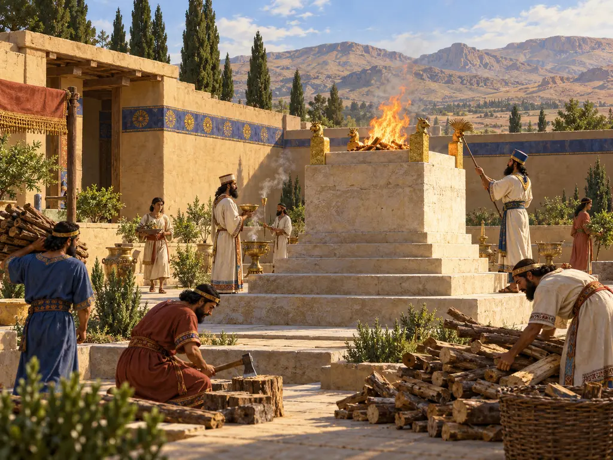
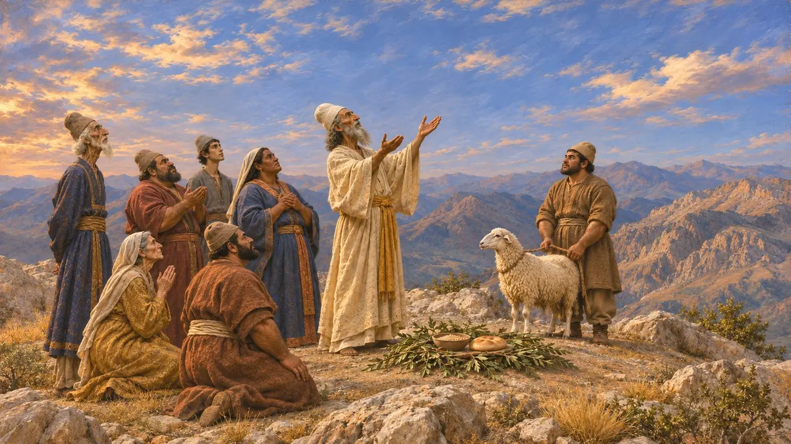
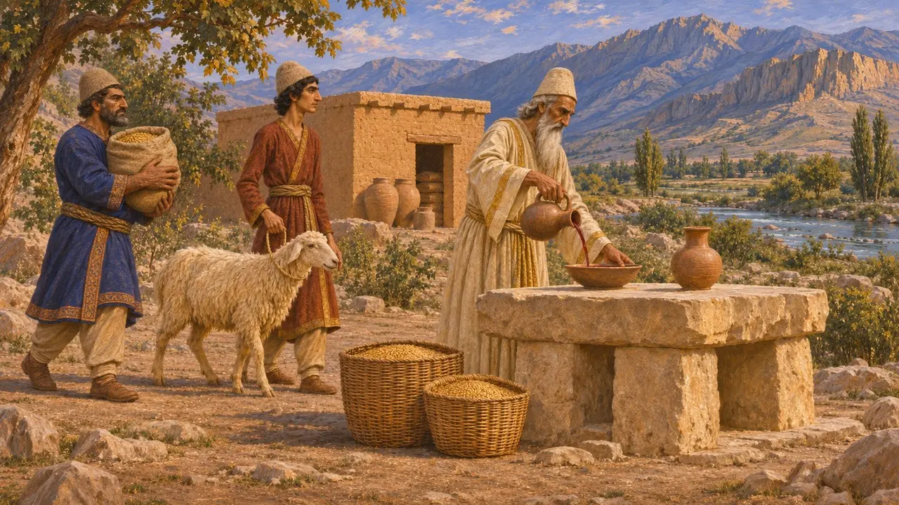
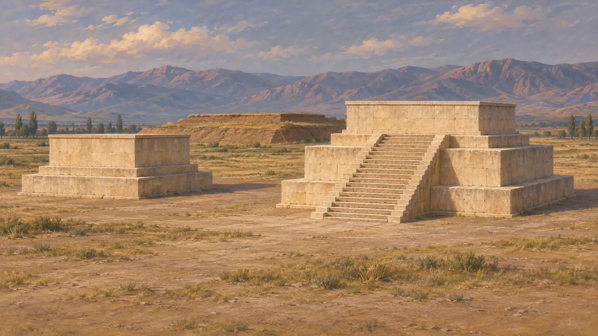
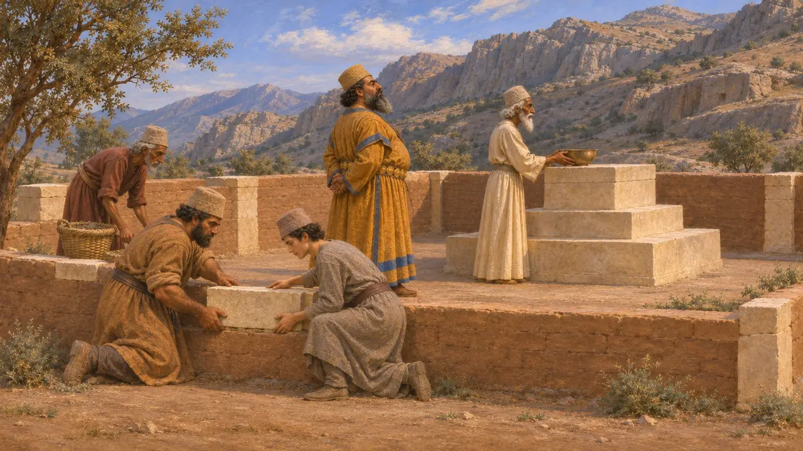
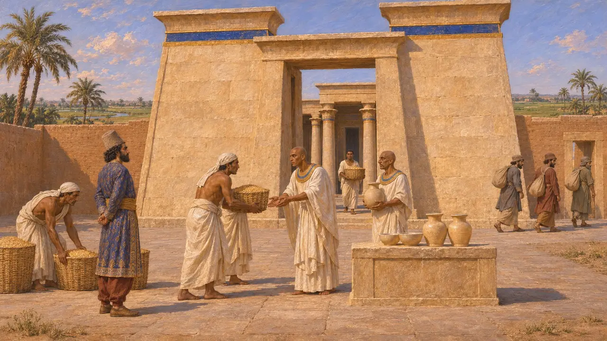

Sanctuary
Places of offering and cult in the Achaemenid empire, about 550-479 BCE
In the game: Level 1: The Founder's Tomb
As far as the evidence shows, Persian worship in this period centred on offerings made in the open air rather than in enclosed temples housing statues. Places of cult still mattered: the sacred precinct at Pasargadae, the local offerings supplied through the Persepolis tablets, the ayadana Darius says he restored, and the many temples of subject peoples that the kings protected or tolerated.
In the game: A Sanctuary sends a magus through the streets to bless households, and houses need its faith to become Terrace Houses. These rounds are the game's invention: the tablets show magi receiving rations to perform offerings, not visiting homes.

Gods without temples
Ancient accountHerodotus says the Persians set up no statues, temples or altars, and thought those who did were foolish. He reports that they sacrificed to Zeus on the highest mountains, giving that name to the whole circle of the sky; modern scholars often link this god with Auramazda. They also sacrificed to the sun, moon, earth, fire, water and winds, and no sacrifice was lawful without a magus to chant.
Herodotus 1.131-132

Offerings in the Persepolis tablets
In the recordThe Persepolis Fortification tablets, written in Elamite between about 509 and 493, record grain, wine and animals issued for offerings. A magus often performed the commonest offering, called lan. Those who received offerings included Auramazda, Elamite gods such as Humban, and mountains and rivers. The tablets show worship spread across many local places and paid for by the royal economy rather than by a single great temple.
Persepolis Fortification tablets; W. Henkelman, The Other Gods Who Are, 2008

The sacred precinct at Pasargadae
In the recordNorth-west of the palaces at Pasargadae lies a sacred precinct with two limestone plinths standing in the open, one reached by a stair. David Stronach, who excavated the site, read them as a setting for royal worship before a fire or altar. A terraced mound stands nearby, though its date and purpose are debated. The rites performed there are unknown, but the layout suits open-air worship rather than a roofed temple.
D. Stronach, Pasargadae, 1978

Darius, Xerxes and the ayadana
DisputedAt Behistun, Darius says he rebuilt the ayadana that Gaumata the magus had destroyed. The Old Persian word is usually rendered as places of worship, but historians disagree about whether these were buildings, open precincts or the estates that supported cult. Xerxes later claimed to have destroyed a place where false gods, the daivas, were worshipped. Scholars still argue about where it was and whether the claim describes a real event.
DB §14; XPh

Temples of the subject peoples
In the recordThe kings did not impose Persian cult on their subjects. The Cyrus Cylinder, a royal text in Babylonian style, presents Cyrus returning gods to their shrines. The statue of Udjahorresnet records that Cambyses had foreigners cleared out of the temple of Neith at Sais and its revenues restored. A petition from Elephantine written in 407 claims the Jewish temple of Yahu already stood when Cambyses came and was spared when Egyptian temples were overthrown.
Cyrus Cylinder; statue of Udjahorresnet; Elephantine papyri
Sources
- Herodotus 1.131-132
- DB §14
- XPh
- W. Henkelman, The Other Gods Who Are, 2008
- D. Stronach, Pasargadae, 1978
- P. Briant, From Cyrus to Alexander, 2002